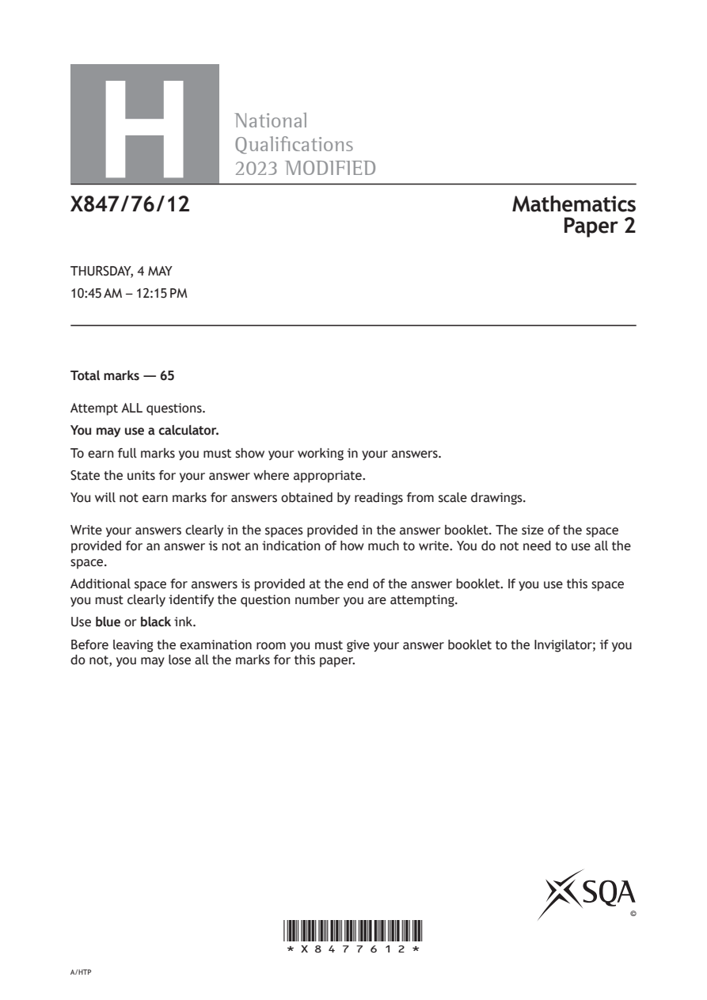
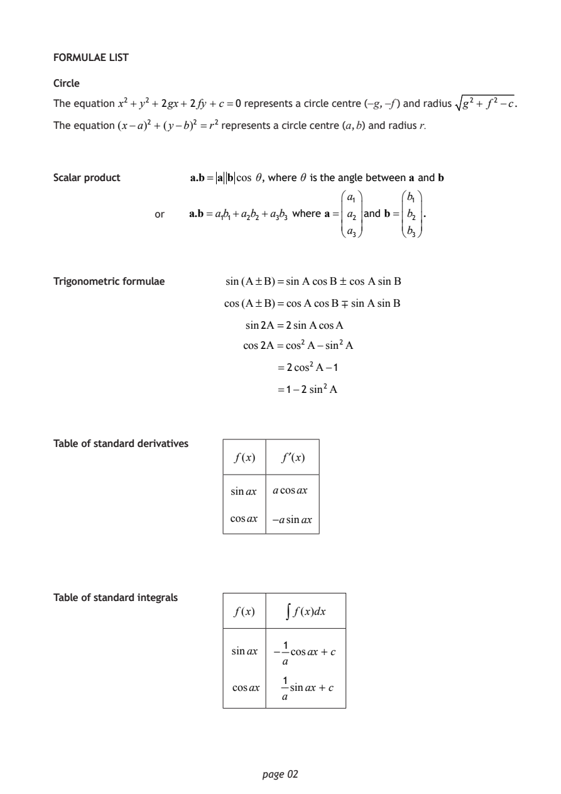
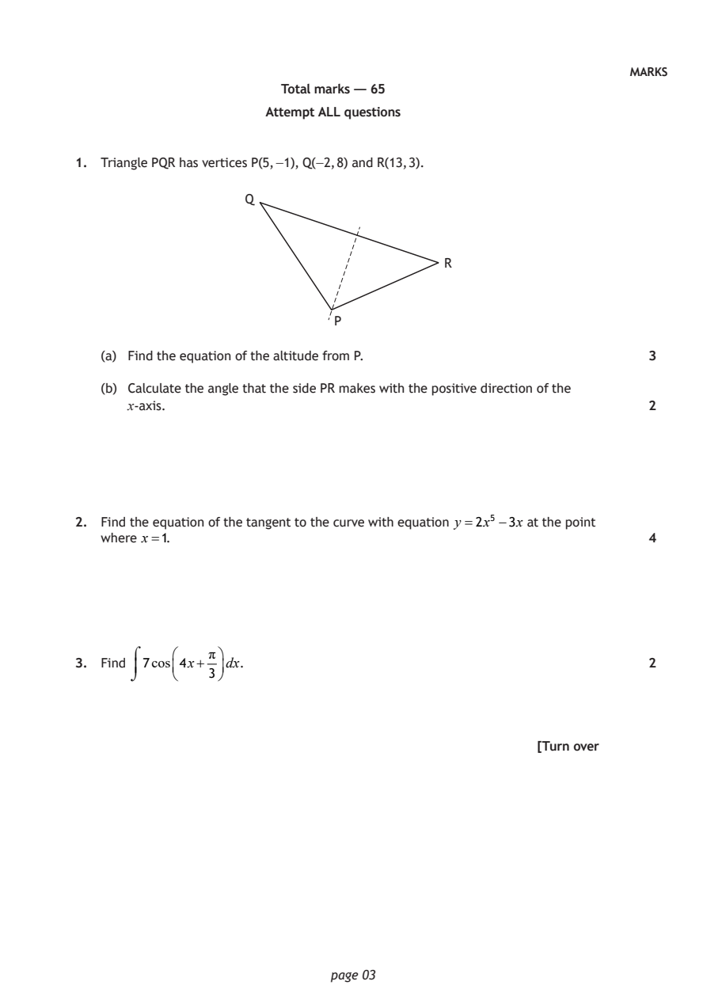
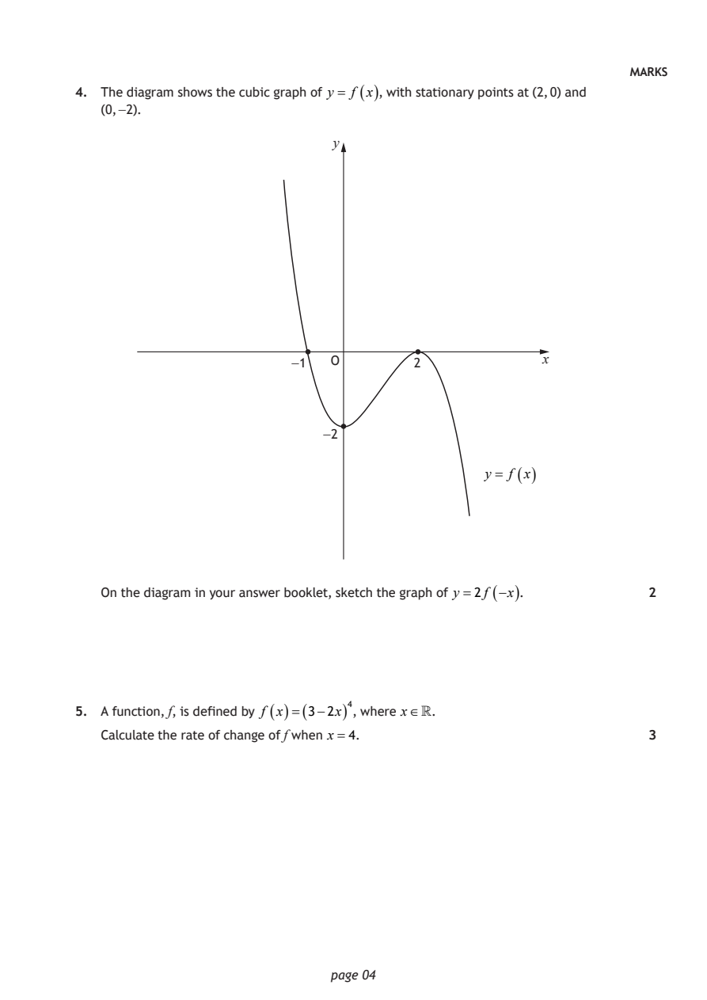
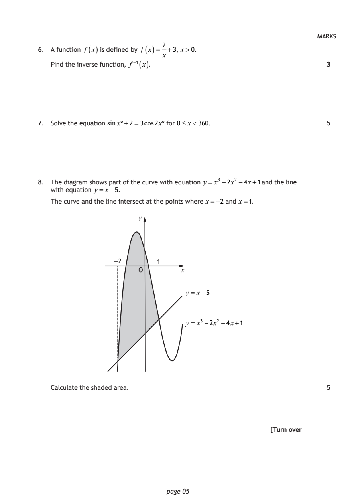
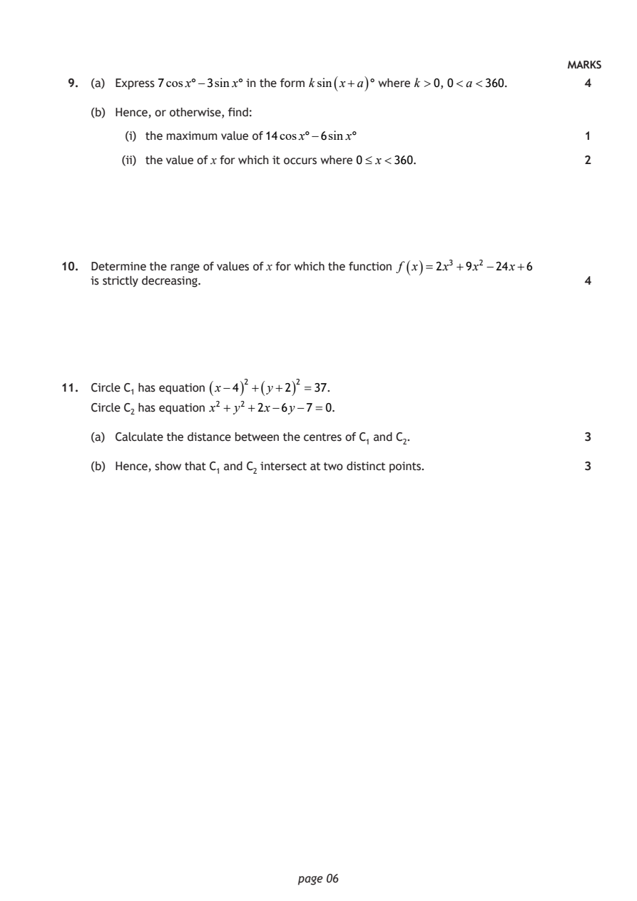
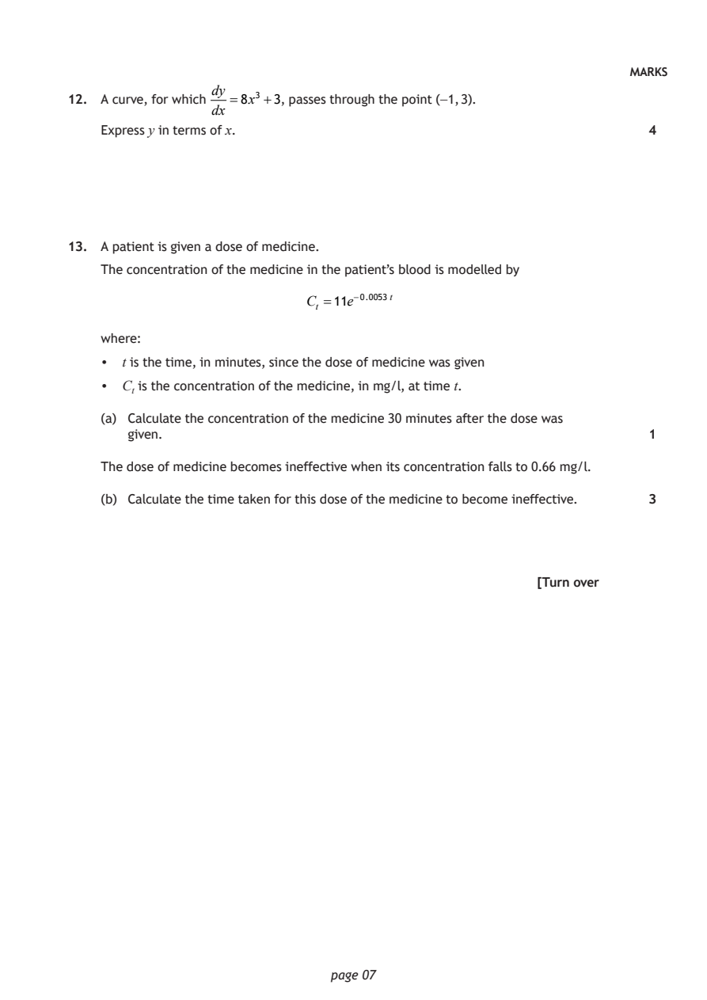
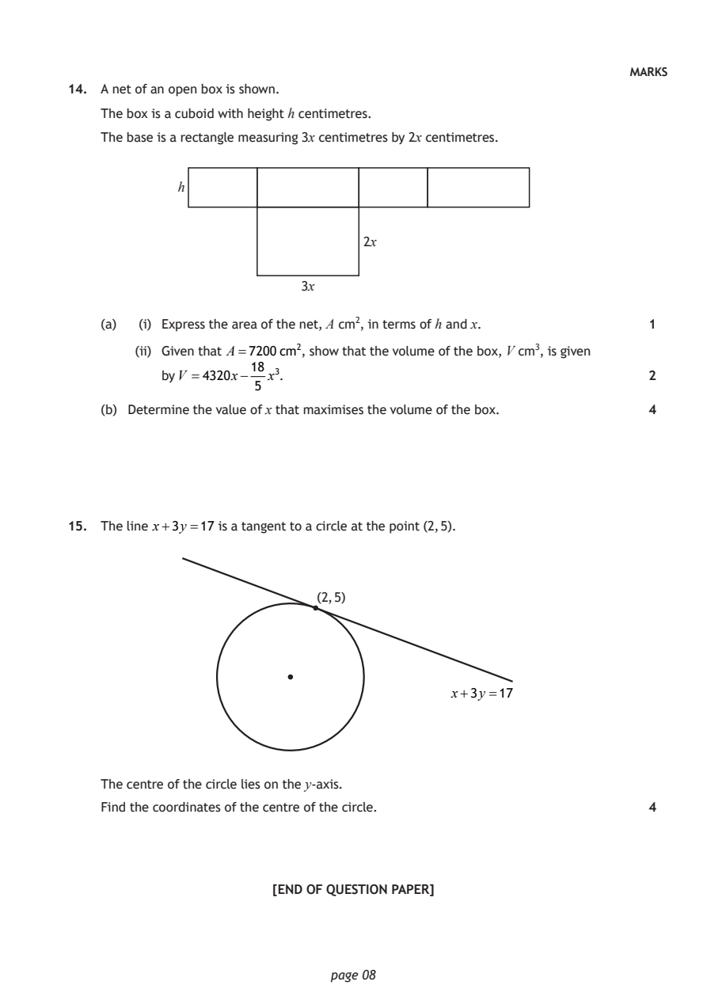

2023 Higher Mathematics - Paper 2 questions
Source: Scottish Qualifications Authority (SQA) / Qualifications Scotland. This is a StemInteract HTML companion, not an official HTML edition. Selectable text is supplied alongside original page images. Use the images or original PDF for equations, powers, fractions, vector notation, tables and diagrams; text extraction cannot fully preserve mathematical layout.
Jump to a question
PDF page 1

Selectable page text
H
National
Qualications
2023 MODIFIED
X847/76/12 Mathematics
Paper 2
THURSDAY, 4 MAY
10:45 AM – 12:15 PM
Total marks — 65
Attempt ALL questions.
You may use a calculator.
To earn full marks you must show your working in your answers.
State the units for your answer where appropriate.
You will not earn marks for answers obtained by readings from scale drawings.
Write your answers clearly in the spaces provided in the answer booklet. The size of the space
provided for an answer is not an indication of how much to write. You do not need to use all the
space.
Additional space for answers is provided at the end of the answer booklet. If you use this space
you must clearly identify the question number you are attempting.
Use blue or black ink.
Before leaving the examination room you must give your answer booklet to the Invigilator; if you
do not, you may lose all the marks for this paper.
©
*X8477612*
A/HTPPDF page 2

Selectable page text
FORMULAE LIST
Circle
The equation x² + y²+ 2gx + 2fy + c=0 represents a circle centre (−g, −f ) and radius g² + f ² −c.
The equation (x−a)² + (y−b)² =r² represents a circle centre (a, b) and radius r.
Scalar product a.b= a b cos θ, where θ is the angle between a and b
a₁ b₁
or a.b=a₁b₁+a₂b₂ +a₃b₃ where a= a₂ and b= b₂ .
a₃ b₃
Trigonometric formulae sin(A±B)=sinA cosB ± cos AsinB
cos(A±B)=cosAcosB ∓ sinAsinB
sin2A =2sinAcosA
cos2A=cos²A−sin²A
=2cos²A−1
=1−2 sin²A
Table of standard derivatives
f(x) f′(x)
sinax acosax
cosax −asinax
Table of standard integrals
f(x) ∫ f(x)dx
1
sinax − cosax + c
a
1
cosax sinax + c
a
page 02PDF page 3
Paper 2, Question 1Paper 2, Question 2Paper 2, Question 3
Selectable page text
MARKS
Total marks — 65
Attempt ALL questions
1. Triangle PQR has vertices P(5, −1), Q(−2, 8) and R(13, 3).
Q
R
P
(a) Find the equation of the altitude from P. 3
(b) Calculate the angle that the side PR makes with the positive direction of the
x‑axis. 2
2. Find the equation of the tangent to the curve with equation y =2x⁵ −3x at the point
where x=1. 4
⌠ π
3. Find 7cos4x+ dx. 2
⌡ 3
[Turn over
page 03PDF page 4
Paper 2, Question 4Paper 2, Question 5
Selectable page text
MARKS
4. The diagram shows the cubic graph of y = f ( x ) , with stationary points at (2, 0) and
(0, −2).
y
−1 O 2 x
−2
y = f ( x )
On the diagram in your answer booklet, sketch the graph of y =2f (−x ) . 2
5. A function, f, is defined by f ( x )=( 3−2x ) ⁴, where x∈.
Calculate the rate of change of f when x=4. 3
page 04PDF page 5
Paper 2, Question 6Paper 2, Question 7Paper 2, Question 8
Selectable page text
MARKS
2
6. A function f ( x ) is defined by f ( x )= +3, x>0.
x
( )
Find the inverse function, f ⁻¹ x . 3
7. Solve the equation sinx°+2=3cos2x° for 0≤ x<360. 5
8. The diagram shows part of the curve with equation y = x³ −2x² −4x+1 and the line
with equation y = x−5.
The curve and the line intersect at the points where x=−2 and x=1.
y
−2 1
O x
y = x−5
y = x³ −2x² −4x+1
Calculate the shaded area. 5
[Turn over
page 05PDF page 6
Paper 2, Question 9Paper 2, Question 10Paper 2, Question 11
Selectable page text
MARKS
9. (a) Express 7cosx°−3sinx° in the form ksin ( x+a ) ° where k >0, 0<a<360. 4
(b) Hence, or otherwise, find:
(i) the maximum value of 14cosx°−6sinx° 1
(ii) the value of x for which it occurs where 0≤ x<360. 2
10. Determine the range of values of x for which the function f ( x )=2x³ +9x² −24x+6
is strictly decreasing. 4
11. Circle C₁ has equation ( x−4 ) ² +( y+2 ) ² =37.
Circle C₂ has equation x² + y² +2x−6y−7 =0.
(a) Calculate the distance between the centres of C₁ and C₂. 3
(b) Hence, show that C₁ and C₂ intersect at two distinct points. 3
page 06PDF page 7
Paper 2, Question 12Paper 2, Question 13
Selectable page text
MARKS
dy
12. A curve, for which =8x³ +3, passes through the point (−1, 3).
dx
Express y in terms of x. 4
13. A patient is given a dose of medicine.
The concentration of the medicine in the patient’s blood is modelled by
Cₜ =11e⁻⁰^{.}⁰⁰53t
where:
• t is the time, in minutes, since the dose of medicine was given
• Cₜ is the concentration of the medicine, in mg/l, at time t.
(a) Calculate the concentration of the medicine 30 minutes after the dose was
given. 1
The dose of medicine becomes ineffective when its concentration falls to 0.66 mg/l.
(b) Calculate the time taken for this dose of the medicine to become ineffective. 3
[Turn over
page 07PDF page 8
Paper 2, Question 14Paper 2, Question 15
Selectable page text
MARKS
14. A net of an open box is shown.
The box is a cuboid with height h centimetres.
The base is a rectangle measuring 3x centimetres by 2x centimetres.
h
2x
3x
(a) (i) Express the area of the net, A cm², in terms of h and x. 1
(ii) Given that A=7200cm², show that the volume of the box, V cm³, is given
18
by V =4320x− x³. 2
5
(b) Determine the value of x that maximises the volume of the box. 4
15. The line x+3y =17 is a tangent to a circle at the point (2, 5).
(2, 5)
x+3y =17
The centre of the circle lies on the y‑axis.
Find the coordinates of the centre of the circle. 4
[END OF QUESTION PAPER]
page 08